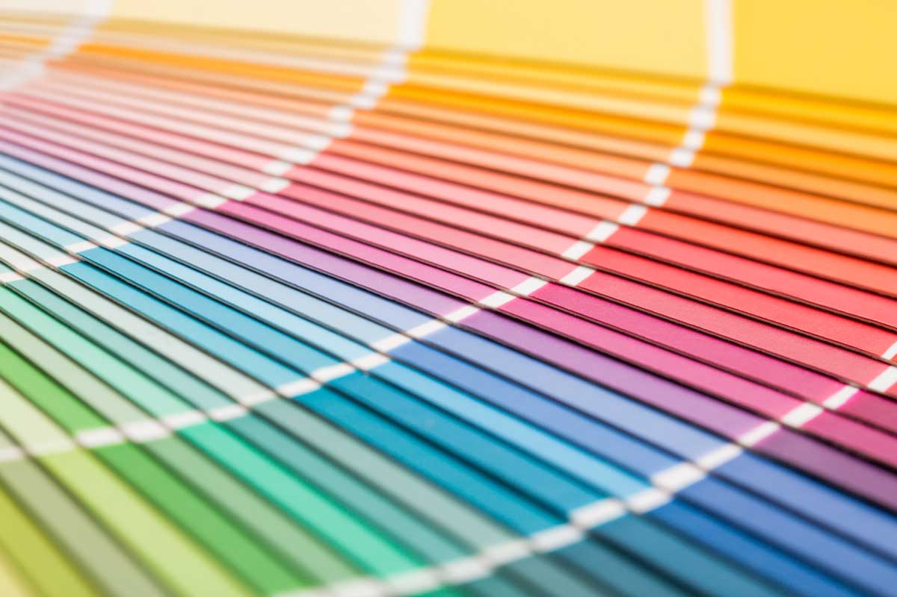
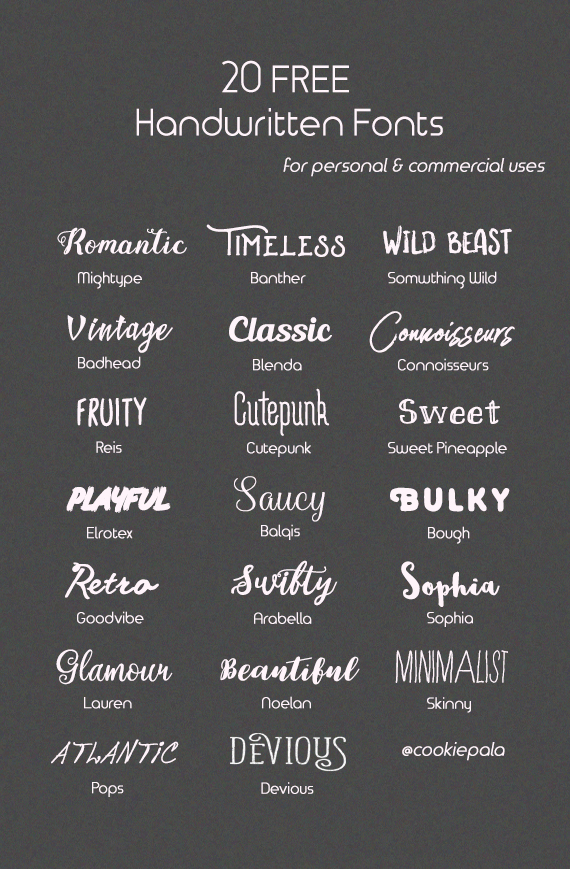

Living in a Minimal World
By: Asuka Lapierre
Minimalism is the art of creating a website that is simple, pleasing, easy on the eye, and free of clutter. It should look clean, professional, yet catches people's attention. It is highly structured and follows strict rules. Things
that should be considered in a minimalist website:
- Colours
- Fonts
- Graphics
 
Many believe that minimalism is the way to go. It is common in professional institutions as well as trendy websites. Some people live by the idea of minimalism and would die for the cause.
"I love minimalist websites. They are my pride and joy. I genuinely cannot look at websites that have more than two fonts; I think it's immoral." - Doug Johnson
For instance, there is even an organization that is trying to make cluttered websites illegal in Canada. They call themselves Alliance for Minimalist Websites or AMW for short. They consider themselves progressive and want to push
for minimalist website standards. Some of their policies include:
- No more than two typefaces per webpage
- Dual colour schemes
- Only lines for shapes
As you can tell, AMW takes themselves very seriously and wants to be respected by the public as a serious organization. They have had issues in the past with lack of respect and consideration. Often, they are ridiculed by critics of minimalism.
The President for the Institution on Shutting Down Minimalism (ISDM) was very insistant on this,
"It's time that minimalists stopped telling us what to do with our websites. We have free will to design however we see fit, and if they can't understand the basic human right to freedom, they do not deserve respect."
In conclusion, minimalism is not only a mode of design for the web developer. It is a lifestyle choice. Once you get into minimalism, there is no turning back.
"Minimalism has changed my life. Ever since I started designing my websites minimalist, my whole life became minimal. I designed my whole house using only two colours, my conversation are minimal, even my relationships are minimal. I've never felt more fulfilled in my life." - Karen Little
It's time to make a positive change in your life. If you would like to donate to the minimalist cause and fight cluttered websites, please call the number 1-800-MIN-IMAL, or 1-800-646-4625. You can also visit the website: minimalrights.com to help make a difference in this overly cluttered world.